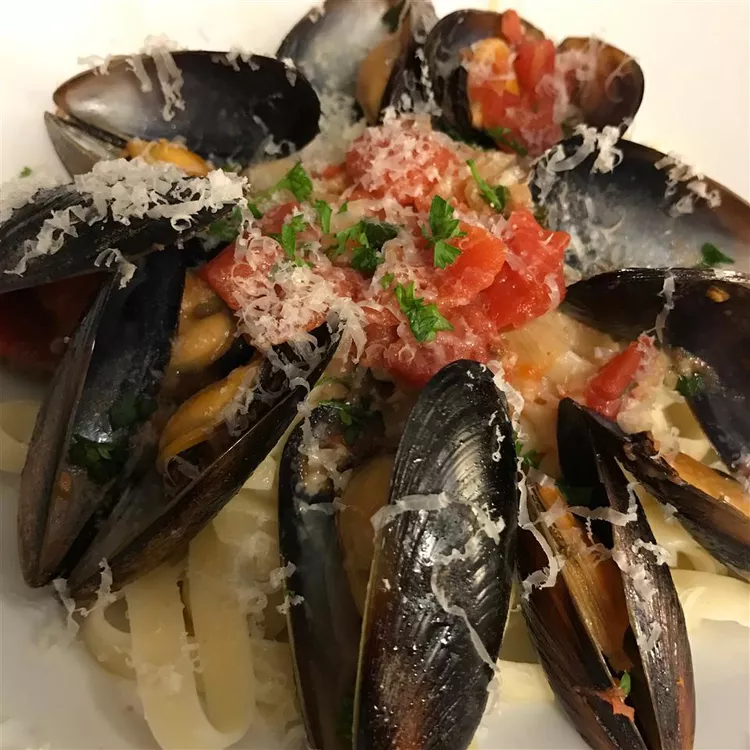

Whether you nestle them over cooked pasta or serve them up with warm, crusty bread, you'll definitely want a carb to pair up with this easy Italian entrée to soak up every last drop of the sauce. Tomatoes, clam juice, onion, garlic, and tomatoes team up with a cup of white wine to make a delectable sauce you'll want to eat with a spoon. We'll let you decide how you'd like to put the other 17.4 ounces of that bottle to good use!